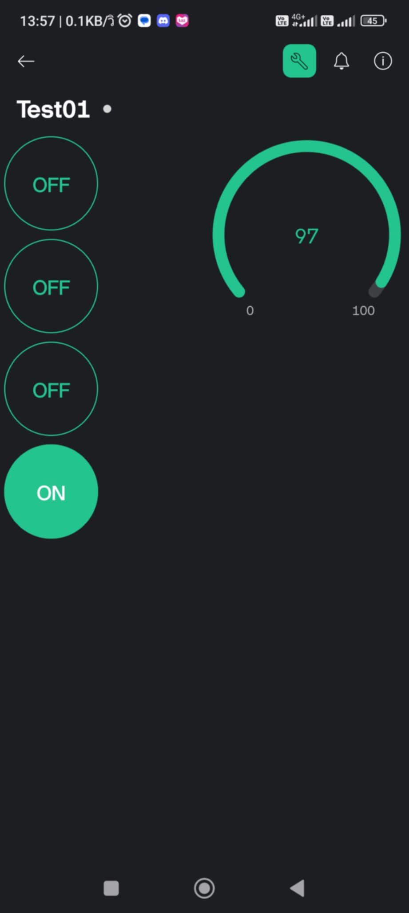

ข้อตกลงผู้อ่าน
***ข้อมูลจากบล็อกนี้จัดทำเมื่อวันที่ 27/07/2567***
การเชื่อมต่อ Blynk กับ Node-RED ผ่าน Raspberry Pi
Blynk เป็นแพลตฟอร์มคลาวด์ที่ให้บริการฟรีสำหรับ IOT โดย Blynk เป็นแอปพลิเคชันสำเร็จรูปที่ออกแบบมาเพื่อการใช้งาน IOT โดยเฉพาะ ความน่าสนใจของ Blynk คือการเขียนโปรแกรมที่ง่ายดาย ไม่ต้องพัฒนาแอปเองและสามารถใช้งานได้แบบเรียลไทม์ ทำให้สามารถเชื่อมต่ออุปกรณ์ต่างๆ กับอินเทอร์เน็ตได้อย่างง่ายดาย ไม่ว่าจะเป็น Arduino, ESP-8266, ESP-32, Node-MCU, Raspberry Pi ซึ่งสามารถนำมาแสดงผลบนแอปพลิเคชัน Blynk ได้อย่างง่ายดาย นอกจากนี้ แอปพลิเคชัน Blynk ยังให้บริการฟรีและรองรับการใช้งานในระบบปฏิบัติการ IOS และ Android อีกด้วย
Blynk กับ Node-RED
- ทดสอบการควบคุม 4 LED ด้วย Raspberry Pi ผ่าน Node-RED
- เพิ่มการส่งข้อมูลอุณหภูมิไปแสดงบนเกจใน Blynk
เข้าไปที่ https://blynk.io/
1. การใช้งาน Blynk
1.1 สร้างเทมเพลตใหม่
เมื่อสร้างเสร็จแล้ว คุณจะได้รับ Template ID, Template Name และ Token
1.2 สร้างอุปกรณ์ใหม่
1.3 เข้าสู่การแก้ไขอุปกรณ์
ตั้งค่า Datastream V0 -> V3 สำหรับสวิตช์
ตั้งค่า Datastream V4 สำหรับเกจวัด
1.4 เลือก UI สำหรับพินต่างๆ
2. การติดตั้ง Node-RED บน Raspberry Pi
2.1 อัพเดตแพ็กเกจและระบบ:
เปิด Terminal และรันคำสั่งต่อไปนี้เพื่ออัพเดตแพ็กเกจและระบบของ Raspberry Pi:
sudo apt update && sudo apt upgrade -y2.2 ติดตั้ง Node.js:
Node-RED ต้องการ Node.js ในการทำงาน เราจะติดตั้ง Node.js เวอร์ชันที่เหมาะสมโดยใช้ NodeSource repository:
curl -sL https://deb.nodesource.com/setup_14.x | sudo -E bash -
sudo apt install -y nodejs2.3 ติดตั้ง Node-RED:
เมื่อติดตั้ง Node.js เสร็จแล้ว ให้ติดตั้ง Node-RED ด้วย npm:
sudo npm install -g --unsafe-perm node-red2.4 เริ่มการทำงานของ Node-RED:
เพื่อเริ่มต้น Node-RED ให้รันคำสั่งนี้ใน Terminal:
node-redNode-RED จะเริ่มทำงานและจะแสดง URL ที่สามารถเข้าถึง Node-RED Editor ในเว็บเบราว์เซอร์ (โดยปกติจะเป็น http://<your_pi_ip_address>:1880).
2.5 ตั้งค่าให้ Node-RED เริ่มต้นอัตโนมัติเมื่อเปิดเครื่อง:
ใช้ pm2 เพื่อตั้งค่า Node-RED ให้เริ่มต้นอัตโนมัติเมื่อเปิดเครื่อง:
- ติดตั้ง pm2:
sudo npm install -g pm2pm2 start `which node-red` -- -v
pm2 save
pm2 startupคำสั่ง pm2 startup จะแสดงคำสั่งเพิ่มเติมที่คุณต้องรันด้วย sudo ให้คัดลอกและรันคำสั่งนั้นใน Terminal.
เมื่อคุณทำตามขั้นตอนข้างต้นเสร็จสิ้นแล้ว คุณก็สามารถใช้ Node-RED บน Raspberry Pi ได้เรียบร้อยแล้วครับ
จัดการ Palette -> ติดตั้ง node-red-contrib-blynk-iot

ตั้งค่าการป้อนข้อมูล timestamp ให้สั่งทุกๆ 1 วินาที
ตั้งค่า Pin V0->V3
ใส่ token และ template ID จาก Blynk
ตั้งค่าฟังก์ชัน
จากนั้นกด Deploy แล้วดูผลลัพธ์
คุณจะสามารถควบคุม LED 4 ดวง และแสดงผลตัวเลขสุ่มทางเกจได้

การใช้งาน Raspberry Pi กับ Node-RED เพื่อแสดงค่าและควบคุมผ่าน Public MQTT Server
- ทดสอบควบคุม 4 LED ด้วย Raspberry Pi ผ่าน Node-RED
- เพิ่มการส่งข้อมูล Temperature (randoms) ไปแสดงบน Server
1. การตั้งค่า Node-RED
1.1 ภาพรวมของ Flow ใน Node-RED
1.2 การเลือก Block MQTT และตั้งค่า Topic และ QoS จากนั้นเพิ่ม Server
1.3 เพิ่ม Server broker.mqtt.cool และ Port 1883
1.4 การตั้งค่า Block Change Rule
***เพิ่มเติม***
สังเกตได้ว่าเมื่ออ่านค่าจาก broker พบ “1on” จะ return ค่า true ทำให้ไฟ LED ติด
เมื่ออ่านค่าจาก broker พบ “1off” จะ return ค่า true ทำให้ไฟ LED ดับ
1.5 การตั้งค่า Function Random Temp และส่งไปยัง broker
2. การใช้งาน Broker
2.1 เข้าไปที่ https://testclient-cloud.mqtt.cool/
2.2 เลือก broker.mqtt.cool:1883
2.3 Subscribe Topic (ต้องตรงกับที่ตั้งค่าใน Node-RED) จากนั้นกรอก Topic ใน Publish แล้วส่ง

***เพิ่มเติม***
ค่าที่ปรากฏด้านขวาคือ Temperature ที่เราส่งมาจาก Node-RED จะแสดงเมื่อเรา Subscribe Topic นี้ไว้
ผลลัพธ์
เราสามารถควบคุม LED ทั้ง 4 ดวงผ่านการ Publish ค่า แล้วให้ Node-RED รับค่าแล้วสั่งเปิด-ปิด LED
ค่า Temperature จะถูกส่งไปยัง broker ทุก 1 วินาทีตามที่ตั้งค่าไว้
MQTT Server บน Raspberry Pi
- ทดสอบควบคุม 4 LED ด้วย Raspberry Pi ผ่าน Node-RED ไปยัง private server
- เพิ่มเติมให้ส่งข้อมูล Temperature ไปแสดงที่ บน private Server
การติดตั้ง MQTT Broker บน Raspberry Pi
MQTT (Message Queuing Telemetry Transport) เป็นโปรโตคอล (Protocol) สำหรับการติดต่อสื่อสารและรับส่งข้อมูลระหว่างอุปกรณ์ต่างๆ ที่เชื่อมต่อกันอยู่บนระบบเครือข่ายภายใน (LAN) และระบบเครือข่ายอินเตอร์เน็ต เช่น คอมพิวเตอร์ สมาร์ทโฟน เซ็นเซอร์อุณหภูมิ เซ็นเซอร์ตรวจจับการเคลื่อนไหว สวิตช์และปลั๊กไฟอัจฉริยะ อุปกรณ์ระบบกันขโมย อุปกรณ์ระบบควบคุมอัตโนมัติ และอุปกรณ์อื่นๆ เป็นต้น
การรับส่งข้อมูลด้วย MQTT นั้นรวดเร็วเนื่องจากข้อมูลมีขนาดเล็กมาก สามารถส่งไปยังหรือรับข้อมูลจากอุปกรณ์จำนวนมากได้พร้อมๆ กัน โดยใช้ระบบ Broker, Publisher, Subscriber และ Topic
โบรคเกอร์ก็คือ MQTT Server ที่เรากำลังจะติดตั้ง ส่วนพับบลิเชอร์และซับสไครบ์เบอร์ก็คืออุปกรณ์ต่างๆ ที่เชื่อมต่อกันอยู่ในระบบเน็ตเวิร์ก อุปกรณ์ที่ทำหน้าที่เป็นพับบลิเชอร์จะส่งข้อมูลตามหัวข้อ Topic ไปยังโบรคเกอร์ หากอุปกรณ์ใดๆ ที่สมัคร (Subscribe) ในหัวข้อ Topic นั้นไว้ โบรคเกอร์จะส่งข้อมูลตามหัวข้อ Topic นั้นไปยังอุปกรณ์ต่างๆ ทั้งหมดที่สมัคร (Subscribe) ไว้ทั้งหมด ส่วนอุปกรณ์ที่ไม่ได้สมัคร (Subscribe) ในหัวข้อ Topic นั้นไว้ ก็จะไม่ได้รับข้อมูล เพราะโบรคเกอร์ก็จะไม่ส่งข้อมูลในหัวข้อ Topic นั้นไปให้
อนึ่ง อุปกรณ์ทุกชิ้นในระบบเน็ตเวิร์กสามารถส่ง (Publish) หรือรับ (Subscribe) ข้อมูลในทุกหัวข้อ Topic ได้ตามที่กำหนด เราจะเห็นได้ว่าในปัจจุบัน มีการนำ MQTT มาใช้อย่างแพร่หลาย เพราะข้อมูลมีขนาดเล็กกะทัดรัด สามารถกระจาย (Distribute) ข้อมูลในหัวข้อ Topic ต่างๆ ไปยังอุปกรณ์ (Subscribers) จำนวนมากได้อย่างรวดเร็ว ไม่ว่าอุปกรณ์เหล่านั้นจะอยู่ห่างไกลจากกันเพียงใดก็ตาม
ข้อดีของ MQTT ก็คือไม่ต้องเสียเวลาในการฟอร์เวิร์ดพอร์ต (Forward port) ให้กับอุปกรณ์ทุกชิ้นในระบบเน็ตเวิร์ก (ยกเว้นตัวโบรคเกอร์ที่ต้อง Forward port) เพื่อเปิดการสื่อสารทางไกลผ่านอินเตอร์เน็ต MQTT Server หรือโบรคเกอร์ (Broker) ยังทำหน้าที่เป็นตัวกลาง ซึ่งจะคอยตรวจสอบการรับส่งข้อมูลระหว่างอุปกรณ์ต่างๆ ที่เชื่อมต่อกันในระบบ เพื่อให้แน่ใจว่าอุปกรณ์ซับสไครบ์เบอร์ทุกชิ้นในระบบได้รับข้อมูลที่ส่งมาจากพับบลิเชอร์อย่างแน่นอน ถึงแม้ว่าในขณะที่พับบลิเชอร์กำลังส่งข้อมูลตามหัวข้อ Topic อยู่นั้น อุปกรณ์ที่เป็นซับสไครบ์เบอร์ของหัวข้อ Topic นั้นจะถูกปิด (Offline) อยู่ก็ตาม แต่เมื่ออุปกรณ์ที่เป็นซับสไครบ์เบอร์นั้นถูกเปิด (Online) กลับมาใช้งานอีกครั้ง โบรคเกอร์ (Broker) ก็จะส่งข้อมูลนั้นในหัวข้อ Topic นั้นไปให้กับอุปกรณ์ที่เป็นซับสไครบ์เบอร์ ซึ่งทำให้การสื่อสารรับส่งข้อมูลครบถ้วนสมบูรณ์ โดยมีขั้นตอนการติดตั้ง MQTT Server เพื่อทำหน้าที่เป็น Broker โดยมีขั้นตอนดังต่อไปนี้
ติดตั้ง Private MQTT Server
- ป้อนคำสั่งเพื่อ Update/Upgrade Raspbian และเริ่มบูทเครื่องใหม่:
sudo apt-get update sudo apt-get upgrade sudo reboot - เริ่มติดตั้งโปรแกรม Mosquitto (MQTT Server) และ MQTT Clients
- SSH เข้าไปที่ Raspberry Pi และสร้างไดเร็กทอรีใหม่สำหรับไฟล์ชั่วคราว:
mkdir mosquitto cd mosquitto - นำเข้า repository package signing key:
wget http://repo.mosquitto.org/debian/mosquitto-repo.gpg.key sudo apt-key add mosquitto-repo.gpg.key - ทำให้ repository ใช้งานได้กับ apt:
cd /etc/apt/sources.list.d/ sudo wget http://repo.mosquitto.org/debian/mosquitto-stretch.list sudo apt-get update sudo apt-cache search mosquito - ติดตั้ง Mosquitto MQTT Broker และ MQTT Clients:
sudo apt-get install mosquitto sudo apt-get install mosquitto-clients
- SSH เข้าไปที่ Raspberry Pi และสร้างไดเร็กทอรีใหม่สำหรับไฟล์ชั่วคราว:
- ตรวจสอบสถานะของบริการ Mosquitto, Process และ Port เริ่มต้น (1883):
หากคุณเห็นว่า Mosquitto service กำลังทำงานและฟังที่ TCP Port 1883, คุณมี MQTT Broker ที่ใช้งานได้service mosquitto status ps -ef | grep mosq netstat -tln | grep 1883 - แก้ไขไฟล์คอนฟิกเกอเรชั่น โดยเพิ่มบรรทัดใหม่ 3 บรรทัดที่ด้านล่างสุดของไฟล์ แล้วบันทึกการเปลี่ยนแปลงในไฟล์ โดยกดปุ่ม Ctrl+O เมื่อปรากฏชื่อไฟล์ ให้กดปุ่ม Enter เพื่อยอมรับ แล้วออกจากเทกซ์อิดิทเตอร์ โดยกดปุ่ม Ctrl+X:
sudo nano /etc/mosquitto/mosquitto.conf allow_anonymous false password_file /etc/mosquitto/pwfile listener 1883 - สร้างยูสเซอร์ชื่อ mymqtt และกำหนดพาสเวิร์ดเป็น myraspi หรือพาสเวิร์ดอื่นๆ เก็บไว้ใน pwfile โดยป้อนคำสั่ง:
sudo mosquitto_passwd -c /etc/mosquitto/pwfile mymqtt Password: ป้อนพาสเวิร์ด myraspi Reenter password: ป้อนพาสเวิร์ดยืนยัน myraspi - ในขณะนี้ เราได้ติดตั้ง Mosquitto เสร็จเรียบร้อยแล้ว แต่จะต้องบูทเครื่องใหม่ เพื่อให้ Mosquitto เริ่มทำงาน:
sudo reboot - เริ่มทดสอบการทำงานของ MQTT Server หรือ Mosquitto โดยเราจะทดสอบด้วยการเรียกหน้าต่าง PuTTY ออกมา 2 หน้าต่าง เพื่อจำลองว่าเรามีอุปกรณ์ 2 ชิ้น ซึ่งหน้าต่างหนึ่งจะทำหน้าที่เป็นซับสไครบ์เบอร์หรือตัวรับข้อมูล (Subscriber) อีกหน้าต่างหนึ่งจะทำหน้าที่เป็นพับบลิเชอร์หรือตัวส่งข้อมูล (Publisher):
- การรับข้อมูล (Subscriber) → ป้อนซับสไครบ์ Topic ชื่อ mynew/test:
mosquitto_sub -d -u mymqtt -P myraspi -t mynew/test - การส่งข้อมูล (Publisher) → ป้อนพับข้อมูล "ทดสอบ" ใน Topic ชื่อ mynew/test:
mosquitto_pub -d -u mymqtt -P myraspi -t mynew/test -m "Test1234"
- การรับข้อมูล (Subscriber) → ป้อนซับสไครบ์ Topic ชื่อ mynew/test: